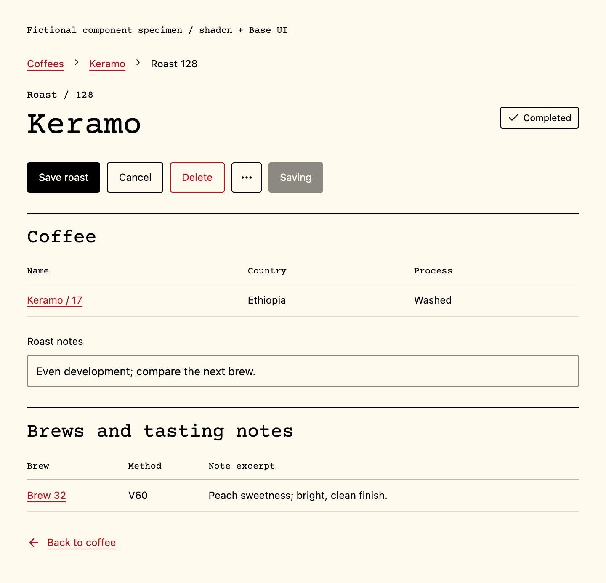

Version 1.1 / 18 October 2026
Tan is a small coffee notebook and roasting identity: botanical, tactile and quiet. Its visual ingredients are the original coffee branch, black and red ink, typewriter lettering and unprinted paper.
Keep the landing page minimal: the plant, then the left-aligned words Vibed / Tan / Coffee. No extra slogans, decorative dashboards, quotes or promotional links.
This guide records the public identity and rules for future Studio work. It does not claim that the existing notebook UI has already been rethemed. Production changes to Studio remain separate from public-site releases.
The adopted logo is the original four-leaf coffee branch. Preserve its silhouette, diagonal stem, cherries, veins and positions. There is no sun. Do not regenerate, trace, simplify or add to the approved master when a palette edit is all that is needed.
The source is source/coffee-branch-original.png. script/build_brand_assets.py classifies each source pixel at its existing coordinate: alpha below 128 becomes transparent; saturated red becomes Tan Red; other pale pixels with weighted RGB luminance at least 140 become transparent; the remainder becomes black. Red classification runs before pale removal.
The output is exactly black #000000, red #B6151B, or fully transparent. Alpha is only 0 or 255. PNG and lossless WebP must agree pixel for pixel. No opaque white, pale backing, gray shading or soft-alpha halo is part of the logo.
- Give the mark clear space of at least one eighth of its displayed width on every side.
- Use 64 px or larger for the detailed mark; use 18 mm or larger as a starting point for a physical print test.
- Favicons are delivery exceptions. Their tiny botanical detail will be reduced; do not invent a new logo to fill the gap.
- Keep the original aspect ratio. Use the transparent master over white or raw stock. Never bake either paper color into the logo file.
| Role | Value | Use |
| Ink black | #000000 | Body text, stems, leaves, rules, primary actions |
| Tan Red | #B6151B | Cherries, a single headline accent, active or destructive states |
| Raw stock | #E8E5DC | Neutral off-white editorial background; not a third ink |
| Light stock | #FFF9EE | Quiet reading and form surfaces; not an ink |
| White stock | #FFFFFF | The physical label paper; never white pixels in the logo |
Use black for most information. Red is a deliberate accent, not a fill for every surface. Do not introduce green, blue, ochre, gradients or colored shadows into the identity. Digital borders and disabled states may use derived black opacity; exported two-ink artwork may not.
"The paper features subtle fibers, natural grain, light usage marks, and a matte texture, while preserving large areas of unprinted paper whitespace, making the blank space an essential part of the layout."
Interpret this user-supplied direction as raw, unbleached paper: neutral off-white, faint uneven grain and generous blank space. Avoid brown kraft tint, decorative fiber strokes and artificial aging. Texture should be noticed after the content, not before it. No glossy shading, folds, coffee stains, artificial burned edges or texture behind dense form fields. Keep roughly half of an editorial composition unoccupied when the content allows it. Notebook tables prioritize useful history over empty decoration.
Tan Red on flat raw stock is about 5.36:1. Use black for body text and underline red links. Both inks support normal text on this surface. Target at least 4.5:1 for normal text and 3:1 for large text; check the final textured surface. Follow W3C's contrast guidance, not color alone, for status and errors.
Courier Prime Regular is the brand voice. Use real text, left aligned, with normal monospace proportions. Keep its SIL Open Font License alongside redistributed font files. No simulated bold, horizontal stretching or text baked into generated artwork.
| Context | Starting specification |
| Landing display | Courier Prime 400, 64-92 px, 1.08 line-height, 0-0.025 em tracking |
| Editorial headings | Courier Prime 400, 28-40 px, 1.15 line-height |
| Captions and units | Courier Prime 400, 12-16 px, 1.4-1.6 line-height |
| Notebook body and controls | Existing Geist/system sans, 14-16 px, 1.5 line-height |
| Numeric records | Tabular figures; units visible; no distressed mask |
Use the typewriter face for identity, headings and concise annotations. Keep dense notebook reading and form controls plain and easy to scan. Studio currently uses shared UI tokens plus notebook overrides; migrate deliberately rather than swapping one root font and hoping every screen works.
- Align the plant, heading and supporting material to one left edge. Use a 4 px spacing rhythm: 8, 12, 16, 24, 32 and 48.
- Preserve the approved plant-above-title order on mobile. Start at 24 px side margins; grow margins with the canvas.
- Use thin rules to organize real content. No ornamental frames, pill clouds, stock dashboard tiles or card around every fact.
- Keep type selectable, searchable and accessible. Ink wear is optional on large editorial type only, never on inputs, tables or instructions.
Use the existing shadcn components from @tan-studio/ui/components. The repository uses Base UI / base-nova with Lucide icons. Do not build a custom widget when a shadcn component exists; add the missing primitive through the existing setup and compose it.
| Need | Existing primitives |
| Actions | Button, DropdownMenu, Tooltip |
| Data and history | Table, Item, Badge, Separator |
| Data entry | Field, Label, Input, Textarea, Select, NativeSelect, Checkbox |
| Navigation | Breadcrumb, NavigationMenu, Sidebar, Tabs |
| Detail and editing | Card, Dialog, Sheet, Collapsible |
| Feedback | Alert, Empty, Skeleton, Spinner, Progress, Sonner |
Use one primary action per section. Default actions use black ink; outline or ghost variants are secondary. Red marks destructive actions or the active item, always with a label or icon as well. Give keyboard focus a clear 2 px outline with offset. Keep visible labels, error messages and an understandable disabled state. Aim for 44 px touch targets even where a smaller visual control is used.
Use the shared semantic tokens. Keep backgrounds matte, corners restrained (about 3 px) and shadows absent unless a transient layer needs separation. Paper grain belongs outside controls. Preserve shadcn accessibility behavior, keyboard interaction and focus management.
The runtime contract is apps/web/src/generated/api.ts. Coffee exposes name, country, process and roastCount. A Roast may reference a Coffee through coffee; a Brew points to its Roast through roastId. Notes have body, kind and resource links. Do not invent brew.coffeeId or assume every roast has a coffee reference.
Coffee detail should expose roast history and note excerpts immediately. Roast and Brew views keep their related records clickable. Keep breadcrumbs and a return path. Missing data is "Not recorded", never a fabricated value. Convert stored mg and milli-degrees only for display and show the unit. Any sample data must be labeled fictional.

This fictional example is rendered from the repository's actual shadcn Button, Badge, Breadcrumb, Card, Table, Label and Input components. It is a brand specimen, not a connected notebook screen.
The Coffee row uses CoffeeResource name, country and process. Roast 128 is an example notebook record id, not an asserted native log number. Brew 32 refers back through roastId; its excerpt represents NoteResource body. Labels and units must remain faithful to the runtime contract.
Keep the table visible, the excerpt useful, and the path back to coffee obvious. Do not hide this history inside decorative summary tiles.
Use the installed Lucide set first, consistent with apps/web/components.json. Keep 24 x 24 source viewboxes, 2 px strokes, round caps and joins; display at 16-20 px in ordinary controls. Functional icons use currentColor, not grain. A standalone icon button needs an accessible name; a tooltip does not replace the name. If an icon already exists, reuse it.
A genuinely missing domain symbol should be an editable SVG matching the existing stroke system. Keep it in a shared place with a clear semantic name. Do not generate raster art for tiny controls.
Coffee plants, brewers and occasional field-note illustrations use the carved rubber-stamp language: uneven hand-cut contours, notches, restrained dry-ink gaps and slight registration imperfection. Black structure, red emphasis, unprinted paper for everything else. No green foliage, ochre sun, smooth vector shading, glossy 3D, cartoon faces or decorative clutter.
Generate a new illustration only when a new subject is needed. Start from an approved style reference and an exact subject brief. The source illustration and prompt are retained. The approved logo itself is never regenerated.
1. Choose whether the output is a transparent reusable asset or a complete editorial study. Never mix the two deliverables.
2. For a reusable asset, request transparent artwork and no text. For a study, apply the paper-and-whitespace prompt on the next page.
3. Review the silhouette, subject identity and small-size readability before color conversion.
4. Map the approved source pixels to black, Tan Red or transparency. Treat pale marks as cutouts, not white paint. Keep the original source unchanged.
5. Export an indexed PNG master and lossless WebP. Verify the three-state palette, binary alpha and no new geometry. Save the prompt and proof manifest.
6. Inspect over white, raw stock and a checkerboard. Reject white rectangles, pale veins, halos and accidental extra colors. Keep ordinary UI icons separate from these illustrations.
Use the following template for a new brewer or botanical illustration. Replace the subject description, keep the constraints, then apply the deterministic two-ink export step.
Create one isolated [SUBJECT] in Tan's Japanese field-note rubber-stamp style. Use the approved coffee-branch artwork as a style reference. Preserve the subject's distinctive silhouette and essential structure, reducing irrelevant repetition. Render carved contours, uneven line widths, notches, fractured edges, dry-ink gaps and restrained hand-stamp misregistration. Use only black structure and one red accent; texture must be unprinted transparent gaps. No gradients, shading, white paint, background paper, rectangle, border, lettering, photographic region or decorative objects. Output a centered transparent asset with clear margins. Do not redraw or modify the Tan logo.
Place the approved transparent [SUBJECT] artwork on neutral off-white uncoated paper. The paper features subtle fibers, natural grain, light usage marks, and a matte texture, while preserving large areas of unprinted paper whitespace, making the blank space an essential part of the layout. Use faint grain only; avoid brown kraft tint, decorative fiber strokes and artificial aging. Keep the stamp modest, with broad quiet margins and only the minimum subject detail needed for recognition. Use black and red inks only. No photograph, visible central divider, collage, circular seal, postage perforations, wax seal, glossy gradients or dense ornament. Preserve the original artwork's proportions. Keep any caption area blank; add captions later as real Courier Prime text. Quiet, tactile and restrained, like a useful field record rather than an advertisement.
Use the actual subject or record name, an optional meaningful number, and a few descriptive words when useful. Do not invent a year, origin, tasting note, roast number or measurement for decoration. Do not add slogans to generated images. Typeset captions after the artwork is approved.
The project uses a NIIMBOT B21 Pro with the user's 50 x 80 mm black/red white stock. Design the document at that physical size. At a nominal 300 dpi, 50 x 80 mm corresponds to about 591 x 945 px; the app's actual printable area and scaling still need a physical proof.
- Start with at least 2 mm safe margins as a design allowance; confirm registration on the actual roll.
- On white labels, white means no printing. Do not print a paper-color or grain background with black/red media.
- Use the transparent two-ink PNG. The medium supplies its red appearance; an RGB file alone is not a physical color proof.
- Keep fine rules at least 0.25 mm and small copy about 9 pt as initial test settings. Avoid distressed small text and thin reversed type.
- Use the supported NIIMBOT app/driver, confirm the selected roll and color behavior, and print one test before a run. Printer automation and a physical two-color test are not verified by this brand document.
The current logo proof contains exactly three pixel states and zero opaque white pixels. PNG and WebP agree pixel for pixel. Rebuild with python3 script/build_brand_assets.py; validate with the same command plus --check. Do not save the master through a lossy image editor.
Check original geometry, palette and alpha; font licenses; desktop, mobile and short-screen layout; focus and contrast; real entity links and visible notes; no invented data; and no extra page copy. Public hosting and Studio are separate. Keep any new Studio implementation reviewable against this guide.
- Original and proof: docs/brand/source/ and docs/brand/palette-proof.json.
- Public layout: script/build_public_site.tsx, sites/share/landing.css, sites/share/assets/.
- UI source: packages/ui/src/components/, apps/web/components.json, packages/ui/src/styles/globals.css.
- Runtime records: apps/web/src/generated/api.ts; domain vocabulary: CONTEXT.md.
- Shared proposed brand aliases: docs/brand/tokens.css; these do not silently retheme Studio.
- External references: shadcn/ui components, Courier Prime / SIL OFL, W3C contrast minimum, and NIIMBOT's official software pages. Links are in the editable source reference list below.
shadcn/ui / Courier Prime / W3C contrast / NIIMBOT / Purchased stock